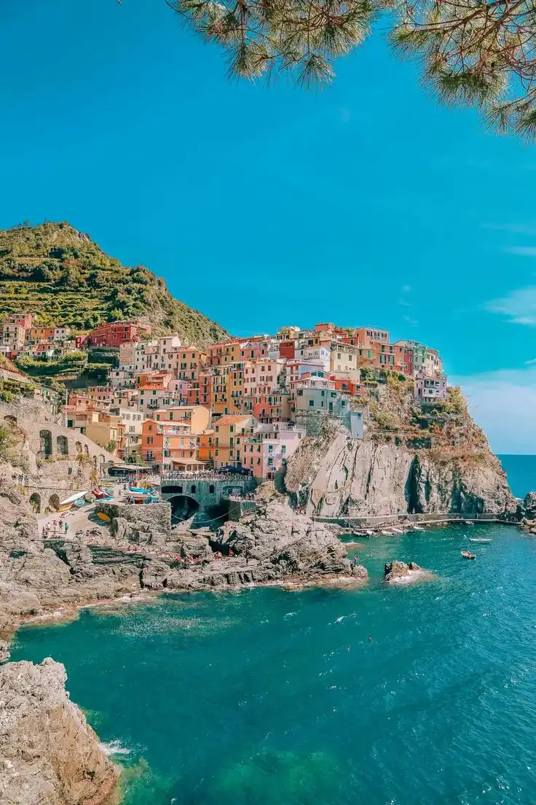

Plan Less. Experience More.
Discover practical ways to organise your next getaway without losing the excitement of discovery.
DISCOVER MOREDiscover inspiring destinations, travel tips, hidden gems, and unforgettable experiences. Your next great adventure might begin with a story.
Every traveller has a different story. Find inspiration for the journey that feels like you.
Find inspiration for your next escape through destination guides, travel tips, and stories from around the world.
 DESTINATION GUIDE
DESTINATION GUIDE
Explore beautiful landscapes, peaceful escapes, and unforgettable places waiting to be discovered.
 TRAVEL TIPS
TRAVEL TIPS
Discover practical ideas to organize your plans, pack thoughtfully, and enjoy more of every trip.
 INSPIRATION
INSPIRATION
Find inspiration to try something new, embrace unexpected moments, and see the world differently.
Find the one that inspires your next adventure.
A collection of ideas, insights and little discoveries to make every journey more meaningful.
Discover practical ways to organise your next getaway without losing the excitement of discovery.
DISCOVER MOREGo beyond the usual destinations and find inspiration in local culture, unexpected places and new perspectives.
DISCOVER MORESlow down, embrace the unexpected and discover why some of the best memories are never planned.
DISCOVER MOREFrom breathtaking coastlines to timeless cities, discover places that make every journey unforgettable.

EUROPEAlpine scenery, peaceful escapes and unforgettable views at every turn.
EXPLORE DESTINATION ASIA
ASIA
Crystal-clear waters, tropical tranquillity and moments worth remembering.
EXPLORE DESTINATIONTraditional streets, rich heritage and beautiful moments around every corner.
EXPLORE DESTINATION